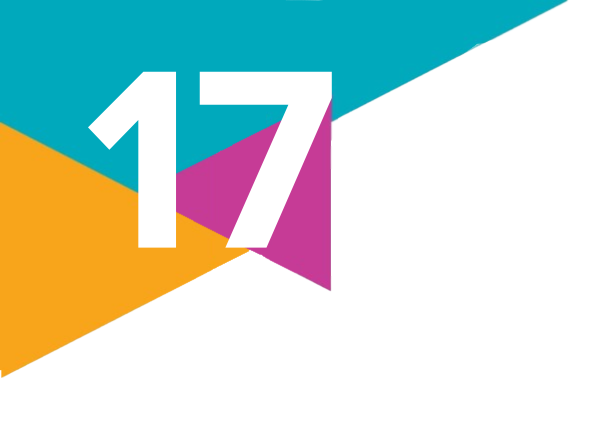

1.
Com base no que você aprendeu neste capítulo, analise as afirmações a seguir e identifique quais delas estão incorretas. Em seguida, reescreva essas afirmações no caderno, de modo que se tornem corretas.
I. A desigualdade extrema gera bolsões de pobreza, mas isso não tem relação com o aumento da criminalidade, que é causado principalmente por fatores individuais.
II. A percepção de injustiça diante da concentração de riqueza nas mãos de poucos pode gerar ressentimento, o que pode levar a conflitos sociais ou violência.
III. A falta de acesso à educação, saúde e emprego de qualidade limita as perspectivas de futuro para grande parte da população, perpetuando o ciclo de pobreza e violência. A sensação de que o sistema econômico é injusto e que não há chances de ascensão social pode levar à revolta e à criminalidade.
IV. A concentração de poder e riqueza pode levar à corrupção e à impunidade, enfraquecendo o Estado de Direito e a capacidade de combater a criminalidade. A percepção de que as leis não se aplicam igualmente a todos aumenta a sensação de injustiça e a predisposição para a violência.
I. A desigualdade extrema gera bolsões de pobreza, mas isso não tem relação com o aumento da criminalidade, que é causado principalmente por fatores individuais.
II. A percepção de injustiça diante da concentração de riqueza nas mãos de poucos pode gerar ressentimento, o que pode levar a conflitos sociais ou violência.
III. A falta de acesso à educação, saúde e emprego de qualidade limita as perspectivas de futuro para grande parte da população, perpetuando o ciclo de pobreza e violência. A sensação de que o sistema econômico é injusto e que não há chances de ascensão social pode levar à revolta e à criminalidade.
IV. A concentração de poder e riqueza pode levar à corrupção e à impunidade, enfraquecendo o Estado de Direito e a capacidade de combater a criminalidade. A percepção de que as leis não se aplicam igualmente a todos aumenta a sensação de injustiça e a predisposição para a violência.
2.
(Enem – 2021)
Houve crescimento de 74% da população brasileira encarcerada entre 2005 e 2012. As análises permitiram identificar o perfil da população que está nas prisões do país: homens, jovens (abaixo de 29 anos), negros, com ensino fundamental incompleto, acusados de crimes patrimoniais, e, no caso dos presos adultos, condenados e cumprindo regime fechado, majoritariamente, com penas de 4 até 8 anos.
Neste contexto, as políticas públicas para minimizar a problemática descrita devem privilegiar a:
a) flexibilização do código civil.
b) promoção da inclusão social.
c) redução da maioridade penal.
d) contenção da corrupção política.
e) expansão do período de reclusão.
Houve crescimento de 74% da população brasileira encarcerada entre 2005 e 2012. As análises permitiram identificar o perfil da população que está nas prisões do país: homens, jovens (abaixo de 29 anos), negros, com ensino fundamental incompleto, acusados de crimes patrimoniais, e, no caso dos presos adultos, condenados e cumprindo regime fechado, majoritariamente, com penas de 4 até 8 anos.
BRASIL. Mapa do encarceramento: os jovens do Brasil. Brasília: Presidência da República, 2015.
Neste contexto, as políticas públicas para minimizar a problemática descrita devem privilegiar a:
a) flexibilização do código civil.
b) promoção da inclusão social.
c) redução da maioridade penal.
d) contenção da corrupção política.
e) expansão do período de reclusão.
3.
Leia a manchete de jornal a seguir.
Brasil gasta quase quatro vezes mais com sistema prisional em comparação com educação básica
a) O que a notícia permite afirmar sobre as políticas públicas de combate à violência privilegiadas no Brasil?
b) Considerando o respeito aos Direitos Humanos, quais seriam outras opções de políticas públicas a serem adotadas para reduzir a violência no país?
Brasil gasta quase quatro vezes mais com sistema prisional em comparação com educação básica
Cada preso custa, em média, R$ 1,8 mil por mês aos cofres públicos, enquanto um aluno da educação básica custa R$ 470,00. [...]
BRASIL gasta quase quatro vezes mais com sistema prisional em comparação com educação básica. Jornal da USP, São Paulo, 21 maio 2022. Disponível em: https://jornal.usp.br/ciencias/brasil-gasta-quase-quatro-vezes-mais-com-sistema-prisional-em-comparacao-com-educacao-basica/. Acesso em: 11 set. 2024.
a) O que a notícia permite afirmar sobre as políticas públicas de combate à violência privilegiadas no Brasil?
b) Considerando o respeito aos Direitos Humanos, quais seriam outras opções de políticas públicas a serem adotadas para reduzir a violência no país?
4.
Loïc Wacquant, em sua obra Punir os pobres, argumenta que a "criminalização da pobreza" é uma estratégia utilizada para controlar e marginalizar as populações mais vulneráveis. Ele descreve como o sistema penal se torna uma ferramenta para punir a pobreza em si, em vez de crimes reais.
Com base nessa perspectiva, reúnam-se em duplas e analisem como a "criminalização da pobreza" se manifesta na sociedade brasileira. Discutam exemplos concretos de políticas ou práticas que reforçam essa dinâmica e seus impactos sobre as comunidades pobres. Além disso, proponham medidas que poderiam ser adotadas para combater essa problemática e promover uma sociedade mais justa e igualitária.
Com base nessa perspectiva, reúnam-se em duplas e analisem como a "criminalização da pobreza" se manifesta na sociedade brasileira. Discutam exemplos concretos de políticas ou práticas que reforçam essa dinâmica e seus impactos sobre as comunidades pobres. Além disso, proponham medidas que poderiam ser adotadas para combater essa problemática e promover uma sociedade mais justa e igualitária.